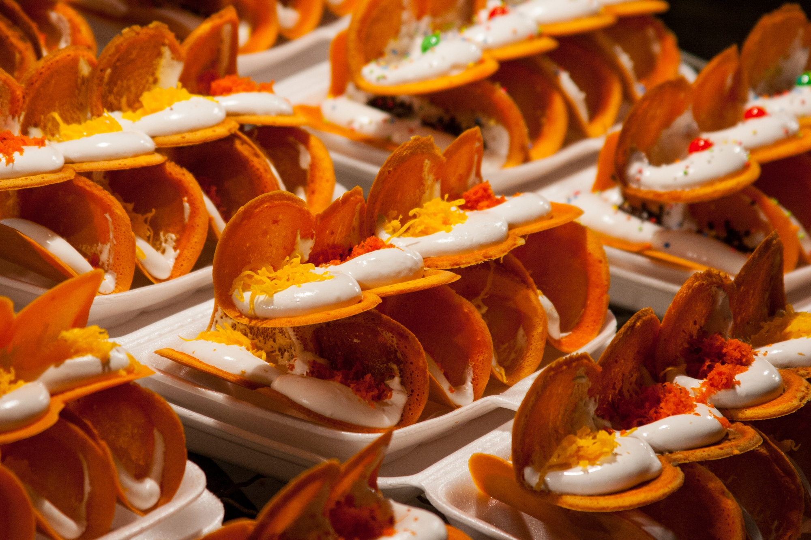

PAD KRA PAO GAI
THAI BASIL CHICKEN RECIPE
Thai basil chicken, better known in Thai as pad kra pao gai (ผัดกระเพราไก่ pad ka prao gai), is a contender for the most popular, and the most beloved Thai street food dish of all time.
INGREDIENTS
| Ingredients Basil Chicken |
1 chicken breast (or any other cut of boneless chicken, about 200 grams) 5 cloves of garlic 4 – 10 Thai chilies – when you fry the chilies, they aren’t as spicy 1 tablespoon oil for frying 1 teaspoon of oyster sauce 1/2 teaspoon light soy sauce 1 splash of dark sweet soy sauce (you can use Indonesian kecap manis) 1/2 teaspoon sugar 1 handful of Thai holy basil leaves (really try to get holy basil) |
INSTRUCTION FOR THE BASIL CHICKEN:
2. Rinse and peel the garlic and chilies, and pound them in a mortar and pestle (alternatively you can just mince them with a knife).
They don't need to be super fine, you just want to bring out the oils and flavors from the garlic and chilies.
3. Pluck a good sized handful of holy basil leaves off the stems.
4. Now it's time to start cooking. Heat your wok on high heat, and add about 1 tablespoon of oil to the pan.
5. When the oil is hot, add the chilies and garlic. Stir fry them for about 20 seconds or so until they get really fragrant,
but don't let them burn or get too dry.
6. Toss in your chicken. Keep stir frying continuously.
At this stage you want to continue to stir and cook your chicken until it's just about fully cooked all the way through
(depending on the size pieces of chicken and how hot your fire is, it should take about 2 - 3 minutes).
If it starts to get dry, add just a tiny splash of water.!
7. Add 1 teaspoon of oyster sauce, ½ teaspoon light soy sauce, ½ teaspoon sugar, and finally a splash of dark soy sauce.
Keep stir frying for about another 30 seconds.
8. Grab a handful of holy basil, toss it into the pan, fold it into the chicken, and then immediately turn off the heat
(if you're using an electric stove, you'll want to remove the pan from the burner).
The holy basil really only needs to cook for about 5 seconds, and it will continue to wilt and cook from the existing heat of the chicken.
This step is important because if you cook the basil for too long, it loses some of its glorious flavor and gets slightly chewy.

KANOM KROK
(THAI COCONUT PANCAKES)
Crispy on the bottom, creamy in the middle, and slightly sweet throughout
It is Thai Coconut Pancakes (kanom krok) are a favorite street food snack in Thailand.
These bite-sized treats are easy to prepare at home
INGREDIENTS
| THE SHELL | THE FILLINGS |
50 g cooked jasmine rice 50 g rice flour 1 cup water ¼ cup coconut milk (see note about good coconut milk above) ¼ cup shredded dried coconut (if you can get fresh, use fresh) 30 g palm sugar, chopped ¼ tsp salt |
1 cup coconut milk 2 Tbsp granulated sugar ¼ tsp salt 2 Tbsp rice flour |
INSTRUCTION:
THE SHELL:
THE FILLING :
Add coconut milk and whisk until sugar is dissolved. Easy peasy!
2.*Both batters can be made in advance and stored in the fridge. Bring it out to room temp before using.
If the shell batter has thickened up too much, you can add a bit of water to thin it out so it pours easily. The batter should have a runny consistency
3.Prepare the toppings and a cooling rack.
TO COOK :
and if it sizzles away immediately it's hot enough. Brush half the holes with coconut oil.
*I like to make only half a pan at a time in the beginning because you'll likely be a bit slow and clumsy to start,
and it's just more manageable and less hectic to deal with a few at a time.
Then add 1 tsp of the filling by dunking the teaspoon right into the middle of the shell and wiggle it slightly.
Let them cook for a minute or so, meanwhile, fill the rest of the pan.
If you're using heavier toppings like corn or taro, and they sink too much into the cakes,
just let the cakes set a bit more before topping.
Give them at least 5 minutes to cook, do not rush them, that is how you get crispy bottoms.
If the bottom is done but the top still needs more cooking, you can cover the pan with a pot lid to steam the top for 1 minute.
To test doneness, tilt the pan slightly, and if the top doesn't run, then it's done.
Tips: Feel free to adjust the temperature of the pan as needed during the cooking process
Place on a rack to cool for a few minutes just so you don't burn yourself, but you want to eat these while they're still warm and crispy.
These do NOT keep well as they go mushy and soggy real fast!!
Note: I'm only using the toothpick to push the cakes up because I don't want to scratch the nonstick pan with the spoon,
but if you're using cast iron, you can just use the spoon alone.

GAENG KEOW WAN
(GREEN CURRY)
One of the signature Thai dishes that almost everyone loves is Thai green curry.
An immaculate blend of green curry paste combined with coconut cream to create a thick curry that goes extremely well with rice.
INGREDIENTS
| Ingredients | Ingredients for Green Curry Paste |
|
1¾ cup coconut milk, divided 50 g (~3 Tbsp) green curry paste 1 cup chicken stock, unsalted 1 lb chicken thigh, boneless, skinless, cut into 1-inch pieces 12 Tbsp palm sugar, finely chopped (can substitute brown or granulated sugar) 1½ - 2 Tbsp fish sauce 3-4 kaffir lime leaves, roughly torn 1½ cup bamboo shoots, canned (can use sliced or strips) 1 cup Thai Basil 1 spur chilies or ¼ red bell pepper, julienned jasmine rice for serving |
2 tsp coriander seeds 1 tsp cumin seeds ½ tsp white peppercorns 15 green Thai chilies 1 tsp salt 15 Thai basil leaves, finely julienned 3 Tbsp lemongrass, thinly sliced 1 Tbsp galangal, finely chopped 2 tsp kaffir lime zest, finely chopped (or sub lime zest) 2 tsp cilantro roots, finely chopped, or 2 Tbsp cilantro stems, finely chopped 3 Tbsp shallots, finely chopped 2 Tbsp garlic, finely chopped 1 tsp fermented shrimp paste (gapi) |
INSTRUCTION :
(if the oil doesn’t separate after it has reduced until very thick, it's okay, just proceed with the recipe).
2. Add curry paste and sauce, stirring constantly over medium heat for about 2 minutes until aromatic.
If paste sticks to the bottom of the pan, you can deglaze with a little bit of the remaining coconut milk.
3. Add chicken thigh and stir to mix with the paste. (See below if using chicken breast).
4. Add kaffir lime leaves, chicken stock, remaining 1 cup of coconut milk, palm sugar and 1 Tbsp fish sauce.
Bring to a simmer and let simmer gently for 10-15 minutes or until the chicken is fork tender.
5. Once the curry is done simmering, add bamboo shoots and bring to a boil.
If you prefer your peppers to be more cooked, add them at this stage.
Once boiling, remove from heat.
6. Taste and add more fish sauce and/or sugar as needed.
7. Stir in Thai basil and spur chilies or bell peppers.
8. Serve with jasmine rice
INSTRUCTION FOR CURRY PASTE:
Cool on a plate. Repeat with the cumin seeds.
2. Using a mortar and pestle, grind toasted coriander seeds, toasted cumin seeds, and white peppercorns into a fine powder.
Remove from mortar and set aside.
3. Cut at least 8 green Thai chilies in half horizontally and, with a paring knife,
scrape off and discard the seeds and pith, then finely chop along with the remaining chilies.
Note: The seeds and pith are removed from some of the chilies to tone down the heat,
you can remove seeds from all of the green chilies if you wish to tone it down even more
4. Add chopped chilies and salt to a heavy-duty mortar and pestle; pound into a fine paste.
If the mixture feels too wet at any point, add some of the ground spices to absorb the liquid.
5. Add basil leaves; pound into a fine paste.
6. Add lemongrass, galangal, kaffir lime zest, and cilantro roots; pound into a fine paste.
7. Add shallots, garlic, and any remaining ground spices; pound into a fine paste.
8. Add shrimp paste and pound to mix.

KHANOM BUEANG
Khanom Buang (ขนมเบื้อง) or Thai Crispy Pancake / Thai Crepe is a traditional Thai Dessert in the central part of Thailand
1. Place 1 egg shell in a mortar and pestle and crush for a couple of minutes until the shell is broken into a powder.
Then pour in 125 ml of water, mix with the crushed egg shell, and set aside.
2. Now add 3 egg whites and 1/2 cup of sugar to a jug or bowl
and whisk for about 5 to 10 minutes until you are left with a thick cream.
3. Next we need to make the crepe batter.
By now the egg shell powder we made earlier should have settled at the bottom of the mortar and pestle.
We just want to spoon out the water only into a mixing bowl, and then add 50g mung bean flour, 100g of rice flour, 1 egg, 150g of sugar, and 1/2 tbsp of coco powder
to the bowl and whisk together until there are no lumps in the mixture.
4. Now heat a non stick pan on a medium-low heat, and when hot, pour a small amount of batter onto the pan, and spread it out in a circular motion,
so that you have a very thin layer of batter.
Let the crepe cook for about 20 seconds or so, then spoon on some of the whipped cream we made,
along with some of the golden egg yolk threads.
When the crepe is crispy and light brown, which shouldn’t take more than a couple of minutes of cooking to achieve,
carefully fold the crepe in half and remove from the pan. Repeat this process until all of your batter has been used up.
SAKOO YAT SAI
Sakoo Yat Sai is a tapioca dumpling filled with caramelized meat, sweet pickled radish and peanuts.
We garnish it with fried garlic and serve it with lettuce, cilantro and fried dried red chilies.
Simply wrap the tapioca dumplings in the lettuce, cilantro and break off a piece of the fried chillie. The sweet, savory and spiciness will awaken all your tastebuds.
The chewiness from the tapioca and the crunch from the peanuts will make it bite to remember.
1. Heat a pan with the oil on high; add the sugar and caramelize.
2.Add garlic and shallots and fry until lightly golden.
3.Add the meat/chicken in and cook until all the fat is rendered.
4. Add the turnips, fish sauce, peanuts, black pepper, cooking on medium low heat for about 5 minutes until the mixture solidifies.
5. Let the meat cool by putting it in the fridge for one hour.
6. Rinse the tapioca balls 3 times in room temp water and let it sit for about 30 minutes so most of the water gets drained.
7. Once the meat has cooled, roll them into small balls.
8. Take a tablespoon size of the tapioca mixture and put it in the palm of your hand then put the meat balls inside it. Roll the ball around the tapioca until its full coated.
9. Prepare your steam basket and steam each dumpling for about 5 minutes.
10. Take the dumplings out and lightly rub with vegetable oil so they don’t stick
11. Enjoy as a lettuce wrap with fresh herbs like cilantro, mint, and bird eye chili peppers
BUA LOY
Bua Loy, translating to “floating lotus”, is a dessert as beautiful as it is named.
Bright orange and green orbs intermingling and floating in a sea of white coconut milk,
it is a traditional Thai soupy dessert that is fragrant and will satisfy any sweet tooth.
1. To make the sweet potato dumplings, mash the steamed sweet potato and add sticky rice flour.
Knead until combined into a sandy textured dough. Add water, 1 teaspoon at a time, until the dough comes together with a sheen.
This is typically 5-6 teaspoons. Roll into small marble sized balls.
2. Prepare the pandan bua loy as above by mixing the pandan water with the sticky rice flour.
Add more flour if the dough is too thin, or more pandan water if too thick.
Roll the dough into marble sized balls.
3. Make the coconut milk soup by adding the coconut milk, both kinds of sugar, salt, and knotted pandan leaf to a small saucepan
and simmer for a few minutes. Do not boil. Discard pandan leaf.
4. Bring a pot of water to the boil and tip in all of the dumplings.
Boil for 30 seconds to a minute, or until all of the balls are floating.
Strain with a spider or mesh strainer and divvy up amongst some bowls. Pour the warm sweetened coconut milk over and serve.
YAM MAMUANG
Thai Mango Salad is tart, tangy, salty and spicy.
Its especially refreshing served with crispy deep fried fish as it cuts the oil and elevates the taste.
1. Toast the peanuts in a pan for 10-15 minutes over a medium to medium-low heat. It takes a while to cook the raw peanuts thoroughly. When done, let the peanuts cool. Peel the green mango and shred it with the shredder until you hit the single large seed. Slice the peppers and shallots thinly.
1. Put all the ingredients in a large bowl and mix well. Taste to see if you need lime juice. With a natural product like mango, the sourness varies depending on the variety and how green the mango is. Add lime juice as much as you like, start with a small amount first and keep adding until you hit the right spot. I usually start with ⅓ of a lime. Adjust the taste to your liking. Add ground chili for a spicier salad. If your salad is very spicy, you may need more seasonings.
.jpg)
KHAW NIAO THU LIEN
A classic Thai dessert recipe
especially for durian lovers! A sweet coconut-durian "broth" is poured over chewy sticky rice...
this is such a comforting, heart-warming dessert that is super easy, this recipe will be a breeze!
1. Soak Thai glutinous rice in cold water for 3 hrs.
2. Prepare the coconut cream mixture by combining the coconut cream, sugar and salt into saucepan.
3. On medium heat, stir the coconut mixture to dissolve the sugar without bringing it to boil. Turn off the heat and set aside.
4. After 3 hrs, drain off excess water from glutinous rice. Steam the rice for 15 mins. Half way through steaming, you may open the steamer to turn the rice once.
5. Put the cooked glutinous rice into a large mixing bowl, add the coconut cream mixture and stir to mix well. Cover the bowl with a tea towel, after 5 mins stir the rice mixture once more and cover again with tea towel then set aside.1. Add 500ml of coconut cream, palm sugar and salt into saucepan.
2. Turn on the heat and bring coconut mixture to simmer till sugar dissolved. Remove from heat. Set aside till cooled down to room temperature.
3. Add fresh durian into coconut mixture. Break durian flesh into chunk piece. Ready to serve.1. Place glutinous rice portion size into serving bowl, then top with durian coconut mixture, making sure some durian chunks are on top of the rice.
2. Serve immediately.
KHA NOM CHIN
One of the most loved dishes in southern Thailand is khanom jeen nam ya (ขนมจีนน้ำยา), a coconut milk minced fish curry.
I’ve eaten khanom jeen nam ya (ขนมจีนน้ำยา) at many restaurants and street food stalls in the south of Thailand,
but I still haven’t found a version better than my mea's.
1. Gut and clean the fish, then cut into medium sized pieces. Bring a pot of water to boil, then boil the fish for about 5 - 10 minutes until fully cooked.
2. Remove the fish from the water, drain fully, and leave to cool
3. Once the fish is cool, carefully take off the skin and debone all the meat from the fish, and flake the fish in your fingers so it's almost like deboned minced fish. Discard the bones and skin.
4. Set aside the fish for later.1. Cut off the ends of the lemongrass and tear off the outer few layers, then shave the lemongrass into small pieces. Cut the turmeric into small pieces as well.
2. In a mortar and pestle (or alternatively a food processor), start with a pinch of salt, then pound the dry chilies first for about 10 minutes.
3. Then add the lemongrass, turmeric, garlic, and peppercorns, and pound for about 30 minutes until a relatively smooth paste.
4. Once the paste is pretty smooth, the final step is to add the shrimp paste, and pound and mix for another 5 minutes.
5. Set aside.1. In a large pot or sauce pan, add all the coconut milk and curry paste, then turn on medium heat.
2. Stir gently, and only in one direction, making sure all the curry paste dissolves into the coconut milk.
3. Add the minced fish, season with salt, and tear the kaffir lime leaves in half and add them to the curry
4. Keep stirring in one direction, and once it comes to a boil, turn down the heat. You don't want the curry to boil strongly. Keep stirring gently for about 5 minutes once it comes to a boil.
5. Taste test for flavor, you may need to add more salt. You're done.
GHENG SOM
Gaeng som (also sometimes spelled kaeng som แกงส้ม) in Thai means sour curry or sour soup.
In Thailand you’ll find a number of different variations of gaeng som, sour curry, but I’ll be sharing the distinct southern Thai recipe for this delicious dish.
In this post I’m going to share my mea's recipe for gaeng som (แกงส้ม), a fiery, turmeric filled, fish soup.
1. Begin by making the curry paste. Peel the stems off all the chilies, then add them to a blender or food processor.
2. Peel the garlic, and shallots, and cut the turmeric into pieces, and toss them all into the blender.
3. Add about a cup of water, and blend for a few seconds until pureed.
4. NOTE: Be warned that turmeric stains, so don't use a nice blender!1. To prepare the green papaya, first peel the outer green skin, rinse it in water to remove the sap, then shave off thin bite sized pieces of papaya so you have thin wedges. Cut the papaya like you're whittling a piece of wood. Then set aside.
2. For the limes, slice and squeeze them into a separate bowl.
3. Put a big soup pot on the stove and turn to medium heat, and add in all the curry paste you just blended.
4. Add 2 liters of water to the soup, using some of the water to rinse out the blender, and add to the pot.
5. Add the shrimp paste, and stir the soup to make sure the shrimp paste fully dissolves.
6. Take the green papaya, add it all to the soup, stir quickly, then put the cover on to bring to a boil.
7. Once the gaeng som is boiling, gently add the pieces of fish
8. But here's the Mea's cooking trick - don't stir the soup until the fish is fully cooked. If you stir the soup when the fish is still raw, your soup will taste fishy (according to my mom cooking practice).
9. Boil the soup, without stirring, for about 5 - 8 minutes.
10. When the fish is finished cooking, you can stir gently, and then turn off the stove pretty quickly so you don't overcook the fish.
11. Once your heat is off, it's time to season with salt and lime juice. Add some at first, stir gently, taste test, then add more if needed.
12.Taste test until your gaeng som is sour, slightly salt, and extremely spicy.
KHANOM BUEANG
THAI CREPES
Khanom Buang (ขนมเบื้อง) or Thai Crispy Pancake / Thai Crepe is a traditional Thai Dessert in the central part of Thailand
INGREDIENTS
| TOPPINGS |
100G rice flour 50g mung bean flour 150g sugar 150g sugar 1 egg 1 egg shell 1/2 tbsp coco powder 3 egg whites 1/2 cup sugar 1/2 cup foi thong (golden egg yolk threads) |
INSTRUCTION :
Then pour in 125 ml of water, mix with the crushed egg shell, and set aside.
2. Now add 3 egg whites and 1/2 cup of sugar to a jug or bowl
and whisk for about 5 to 10 minutes until you are left with a thick cream.
3. Next we need to make the crepe batter.
By now the egg shell powder we made earlier should have settled at the bottom of the mortar and pestle.
We just want to spoon out the water only into a mixing bowl, and then add 50g mung bean flour, 100g of rice flour, 1 egg, 150g of sugar, and 1/2 tbsp of coco powder
to the bowl and whisk together until there are no lumps in the mixture.
4. Now heat a non stick pan on a medium-low heat, and when hot, pour a small amount of batter onto the pan, and spread it out in a circular motion,
so that you have a very thin layer of batter.
Let the crepe cook for about 20 seconds or so, then spoon on some of the whipped cream we made,
along with some of the golden egg yolk threads.
When the crepe is crispy and light brown, which shouldn’t take more than a couple of minutes of cooking to achieve,
carefully fold the crepe in half and remove from the pan. Repeat this process until all of your batter has been used up.
SAKOO YAT SAI
(TAPIOCA DUMPLING)
Sakoo Yat Sai is a tapioca dumpling filled with caramelized meat, sweet pickled radish and peanuts.
We garnish it with fried garlic and serve it with lettuce, cilantro and fried dried red chilies.
Simply wrap the tapioca dumplings in the lettuce, cilantro and break off a piece of the fried chillie. The sweet, savory and spiciness will awaken all your tastebuds.
The chewiness from the tapioca and the crunch from the peanuts will make it bite to remember.
INGREDIENTS
| Ingredients | Garnish |
14 oz Mini tapioca balls 6 tbsp vegetable oil 3 tbsp minced garlic 6 tbsp shallots minced 1 lb ground meat/chicken 6 tbsp salted turnip minced 3 tbsp fish sauce ¾ cup ground peanuts Pinch black pepper Refrigerate for 1 hour |
1 bunch Cilantro 1 bunch Mint 1 head Butter lettuce 5 Garlic cloves sliced and fried 1 Shallot fried 2 Tbsp Sesame oil 1 Fresh Thai chili pepper |
INSTRUCTION :
2.Add garlic and shallots and fry until lightly golden.
3.Add the meat/chicken in and cook until all the fat is rendered.
4. Add the turnips, fish sauce, peanuts, black pepper, cooking on medium low heat for about 5 minutes until the mixture solidifies.
5. Let the meat cool by putting it in the fridge for one hour.
6. Rinse the tapioca balls 3 times in room temp water and let it sit for about 30 minutes so most of the water gets drained.
7. Once the meat has cooled, roll them into small balls.
8. Take a tablespoon size of the tapioca mixture and put it in the palm of your hand then put the meat balls inside it. Roll the ball around the tapioca until its full coated.
9. Prepare your steam basket and steam each dumpling for about 5 minutes.
10. Take the dumplings out and lightly rub with vegetable oil so they don’t stick
11. Enjoy as a lettuce wrap with fresh herbs like cilantro, mint, and bird eye chili peppers
BUA LOY
(GLUTINOUS RICE BALLS IN COCONUT MILK)
Bua Loy, translating to “floating lotus”, is a dessert as beautiful as it is named.
Bright orange and green orbs intermingling and floating in a sea of white coconut milk,
it is a traditional Thai soupy dessert that is fragrant and will satisfy any sweet tooth.
INGREDIENTS
| Ingredients for SWEET POTATO BUA LOY | Ingredients for PANDAN BUA LOY | Ingredients for COCONUT SOUP |
50 grams (about ½ cup roughly diced) sweet potato, steamed 55 grams (½ cup) sticky rice flour Water |
70 grams (½ cup + 2 tablespoons) sticky rice flour ¼ cup pandan water (plus extra, if needed) |
250 millilitres (1 cup) coconut milk 2 tablespoons white sugar 1 tablespoon palm sugar ¼ teaspoon salt 1 pandan leaf, knotted |
INSTRUCTION
Knead until combined into a sandy textured dough. Add water, 1 teaspoon at a time, until the dough comes together with a sheen.
This is typically 5-6 teaspoons. Roll into small marble sized balls.
2. Prepare the pandan bua loy as above by mixing the pandan water with the sticky rice flour.
Add more flour if the dough is too thin, or more pandan water if too thick.
Roll the dough into marble sized balls.
3. Make the coconut milk soup by adding the coconut milk, both kinds of sugar, salt, and knotted pandan leaf to a small saucepan
and simmer for a few minutes. Do not boil. Discard pandan leaf.
4. Bring a pot of water to the boil and tip in all of the dumplings.
Boil for 30 seconds to a minute, or until all of the balls are floating.
Strain with a spider or mesh strainer and divvy up amongst some bowls. Pour the warm sweetened coconut milk over and serve.
YAM MAMUANG
MANGO SALAD
Thai Mango Salad is tart, tangy, salty and spicy.
Its especially refreshing served with crispy deep fried fish as it cuts the oil and elevates the taste.
INGREDIENTS
| Ingredients |
|
1 green mango 1/2 - 3/4 cup Toasted Peanuts 1/2 teaspoon sugar 1-2 shallots 1 pinch salt 1 lime 1 chili pepper ground dried chili pepper Optional |
INSTRUCTION :
Prepping:
Tossing:
KHAW NIAO THU LIEN
(DURIAN WITH STICKY RICE)
A classic Thai dessert recipe
especially for durian lovers! A sweet coconut-durian "broth" is poured over chewy sticky rice...
this is such a comforting, heart-warming dessert that is super easy, this recipe will be a breeze!
INGREDIENTS
| Ingredients for Sticky Rice | Ingredients for Coconut Cream with Durian |
|
1.5L water 500g Thai glutinous rice 400ml coconut cream 250g sugar 1 tsp salt |
500ml coconut cream 200g palm sugar 300g durian (fresh if available 1 tsp salt |
INSTRUCTION :
TO PREP THAI GLUTINOUS RICE
2. Prepare the coconut cream mixture by combining the coconut cream, sugar and salt into saucepan.
3. On medium heat, stir the coconut mixture to dissolve the sugar without bringing it to boil. Turn off the heat and set aside.
4. After 3 hrs, drain off excess water from glutinous rice. Steam the rice for 15 mins. Half way through steaming, you may open the steamer to turn the rice once.
5. Put the cooked glutinous rice into a large mixing bowl, add the coconut cream mixture and stir to mix well. Cover the bowl with a tea towel, after 5 mins stir the rice mixture once more and cover again with tea towel then set aside.
TO PREP THE COCONUT CREAM WITH DURIAN
2. Turn on the heat and bring coconut mixture to simmer till sugar dissolved. Remove from heat. Set aside till cooled down to room temperature.
3. Add fresh durian into coconut mixture. Break durian flesh into chunk piece. Ready to serve.
SERVING :
2. Serve immediately.
KHA NOM CHIN
(THAI FISH CURRY WITH RICE NOODLE)
One of the most loved dishes in southern Thailand is khanom jeen nam ya (ขนมจีนน้ำยา), a coconut milk minced fish curry.
I’ve eaten khanom jeen nam ya (ขนมจีนน้ำยา) at many restaurants and street food stalls in the south of Thailand,
but I still haven’t found a version better than my mea's.
INGREDIENTS
| Ingredients for curry | Ingredients for curry paste | Eat Curry with |
800 grams skipjack fish 800 ml fresh coconut cream ( About 1500 ml fresh coconut milk all of the curry paste (ingredients below) 2 tbsp salt 20 kaffir lime leaves |
pinch of salt 4 stalks lemongrass 2 fingers turmeric 20 grams Thai dry chilies (it was about 100 chilies) 1 head garlic 1 tsp black peppercorns 1 tbsp shrimp paste |
khanom jeen or noodle rice deep fried chilies lemon basil sweet basil bean sprouts Chinese long-beans Or you can use any kind of fresh raw vegetables or herbs/br> |
INSTRUCTION FOR THE FISH:
2. Remove the fish from the water, drain fully, and leave to cool
3. Once the fish is cool, carefully take off the skin and debone all the meat from the fish, and flake the fish in your fingers so it's almost like deboned minced fish. Discard the bones and skin.
4. Set aside the fish for later.
INSTRUCTION FOR CURRY PASTE:
2. In a mortar and pestle (or alternatively a food processor), start with a pinch of salt, then pound the dry chilies first for about 10 minutes.
3. Then add the lemongrass, turmeric, garlic, and peppercorns, and pound for about 30 minutes until a relatively smooth paste.
4. Once the paste is pretty smooth, the final step is to add the shrimp paste, and pound and mix for another 5 minutes.
5. Set aside.
INSTRUCTION FOR THE CURRY :
2. Stir gently, and only in one direction, making sure all the curry paste dissolves into the coconut milk.
3. Add the minced fish, season with salt, and tear the kaffir lime leaves in half and add them to the curry
4. Keep stirring in one direction, and once it comes to a boil, turn down the heat. You don't want the curry to boil strongly. Keep stirring gently for about 5 minutes once it comes to a boil.
5. Taste test for flavor, you may need to add more salt. You're done.
GHENG SOM
SOUR SPICY FISH CURRY
Gaeng som (also sometimes spelled kaeng som แกงส้ม) in Thai means sour curry or sour soup.
In Thailand you’ll find a number of different variations of gaeng som, sour curry, but I’ll be sharing the distinct southern Thai recipe for this delicious dish.
In this post I’m going to share my mea's recipe for gaeng som (แกงส้ม), a fiery, turmeric filled, fish soup.
INGREDIENTS
| Ingredients for Soup | Ingredients for Soup Paste |
Barramundi fish, or other ocean water fish - My fish was approximately 600 grams, but you could add more or less as you please. 1.5 – 2 litres water, but you could add more or less as you please. 1 green papaya – 700 grams 1 tbsp salt to taste 1 tbsp shrimp paste 10 – 15 tbsp lime juice – I used about 20 limes in total |
1 head garlic 20 grams turmeric (2 – 3 fingers) 2 fingers turmeric 60 grams white bird’s eye chilis, in Thai prik kee noo khao – I counted about 100 chilies 2 shallots 300 ml water - to blend with the curry paste ingredients |
INSTRUCTION FOR THE CURRY PASTE:
2. Peel the garlic, and shallots, and cut the turmeric into pieces, and toss them all into the blender.
3. Add about a cup of water, and blend for a few seconds until pureed.
4. NOTE: Be warned that turmeric stains, so don't use a nice blender!
INSTRUCTION FOR THE SOUP :
2. For the limes, slice and squeeze them into a separate bowl.
3. Put a big soup pot on the stove and turn to medium heat, and add in all the curry paste you just blended.
4. Add 2 liters of water to the soup, using some of the water to rinse out the blender, and add to the pot.
5. Add the shrimp paste, and stir the soup to make sure the shrimp paste fully dissolves.
6. Take the green papaya, add it all to the soup, stir quickly, then put the cover on to bring to a boil.
7. Once the gaeng som is boiling, gently add the pieces of fish
8. But here's the Mea's cooking trick - don't stir the soup until the fish is fully cooked. If you stir the soup when the fish is still raw, your soup will taste fishy (according to my mom cooking practice).
9. Boil the soup, without stirring, for about 5 - 8 minutes.
10. When the fish is finished cooking, you can stir gently, and then turn off the stove pretty quickly so you don't overcook the fish.
11. Once your heat is off, it's time to season with salt and lime juice. Add some at first, stir gently, taste test, then add more if needed.
12.Taste test until your gaeng som is sour, slightly salt, and extremely spicy.
Rate our recipe
Very Bad
Bad
So So
Good
like it so much !